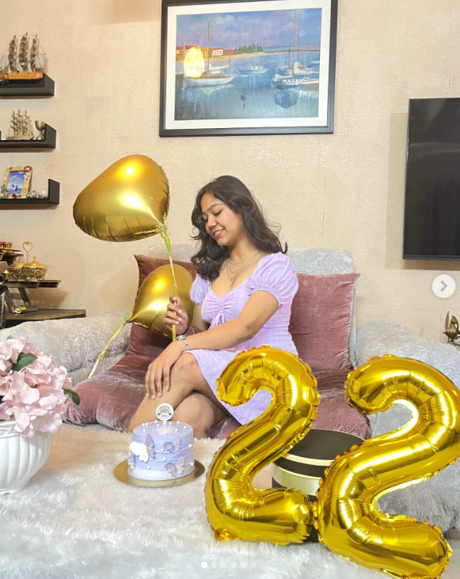

Set the fixed points
Write down venue access, guest arrival, food service, cake, and the time the room must be cleared. These are anchors. Conversation, photos, and optional activities can move a little if guests arrive late or the moment feels unhurried.
| Relative time | Plan | Purpose |
|---|---|---|
| 2 hours before | Room setup, seating, table, sound check | Leaves time to solve small surprises |
| 45 minutes before | Food staging, final tidy, outfit check | Lets the host prepare before arrivals |
| Arrival window | Welcome guests, offer water, play arrival music | Creates a gentle start |
| First part | Conversation and snacks or meal | Gives late arrivals time to join |
| Middle | Photos, optional activity, or dancing | Place shared moments when most guests are present |
| Later | Cake, candles, and serving | Capture cake photos before cutting |
| Final 20 minutes | Goodbyes and a light reset | Avoids an abrupt finish |
Protect breathing room
Use a time range instead of a minute-by-minute script. Ask a helper to answer the door, manage the playlist, or set out cake plates. If it is a venue event, confirm who handles setup and cleanup.
Keep the host in the celebration
Let someone else capture key photos and help with serving. Keep activities optional and let the schedule flex around the people in the room.
Frequently asked questions
How detailed should the schedule be?
Write down timing-dependent tasks, but leave open time for conversation and delays.
When should we take photos?
Photograph the room and cake before guests gather, then take portraits or group photos before the cake is cut.
Further reading
These resources support the practical ideas in this guide. Open them for details that fit your venue and plans.
- Run of Show Template — Explains how to structure a run-of-show, timing, and responsibilities.
- Event Day Timeline — A timeline template to adapt for setup, program moments, and transitions.
- Event Day Run of Show — Provides a run-sheet structure with timing and assigned owners.
- Event Planning Guide — Practical event planning material with day-of logistics and schedule considerations.
- Event Logistics Checklist — Day-of logistics checklist for setup, coordination, and event flow.
- Event Planning Timeline: The Complete Guide — Describes timeline planning and task sequencing that can be scaled to a home party.
- Event Day Schedule — Offers a schedule layout for assigning timed event activities.
- How to Plan a Party — Includes practical party planning and run-of-show ideas.
- Dinner and Dance Planning Checklist — Sample event-day sequence and planning checklist, adaptable for a larger birthday gathering.
See the birthday inspiration
Use Shanaya’s birthday post as a visual reference, then make the celebration your own.

Open the birthday post on Instagram ↗View the birthday post ↗ Visit @_itzzzshanaya